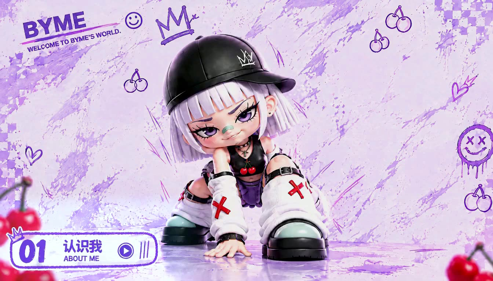
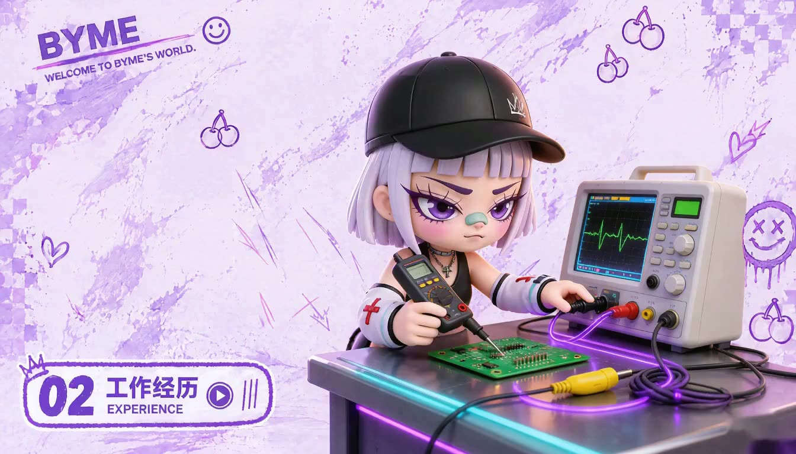
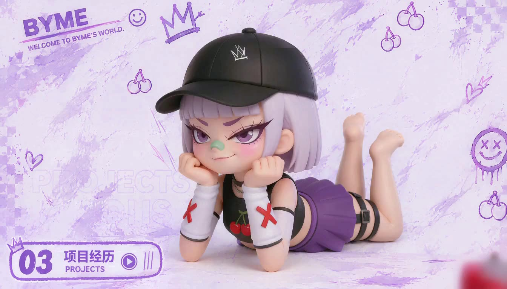
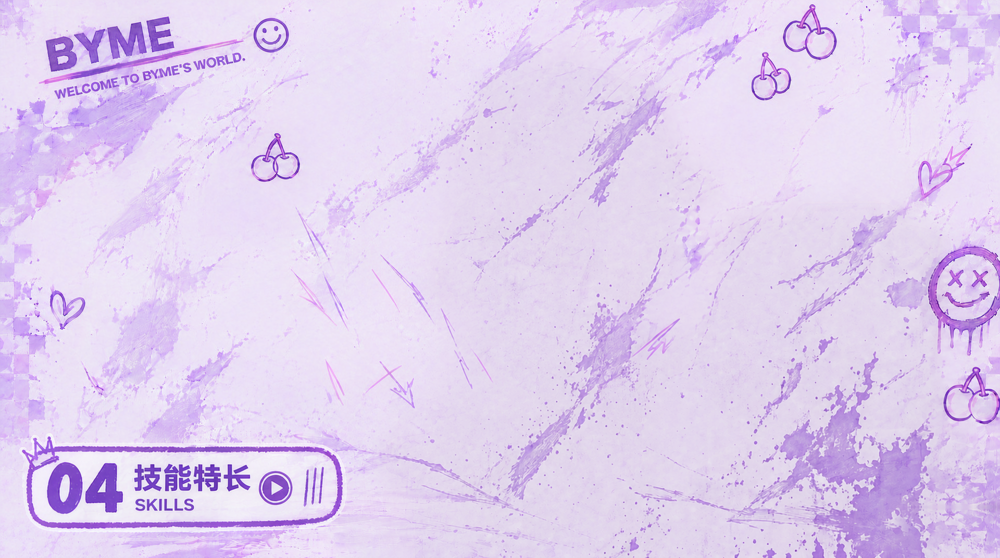

人生不是流水线， 我也不想只做标准件。
人生不是流水线，我也不想只做标准件。



一枚正在探索人生新地图的普通女孩。
我学了四年电气工程，毕业后顺理成章地成为了一名电子工程师。
每天和电路板、示波器、测试报告打交道。工作需要严谨、规范、按流程来。
一个不太安分的人，误入了循规蹈矩的世界。
可偏偏，我是一个不太喜欢按部就班的人。我总忍不住想：
「这件事一定要这么做吗？」
「有没有更聪明、更有趣的办法？」
后来，我遇见了 AI。
我开始尝试做 Agent、设计产品、研究各种 AI 工具，发现原来那些脑袋里天马行空的想法，真的有机会被做出来。
我还不知道下一站会是什么样子。
但比起沿着别人画好的路线走，我更想自己探索一条路。
人生不是流水线，我也不想只做标准件。